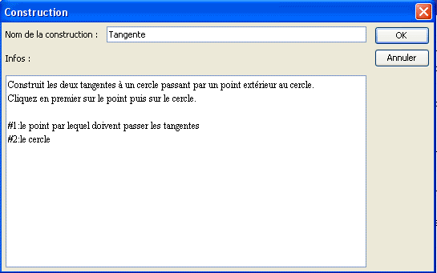
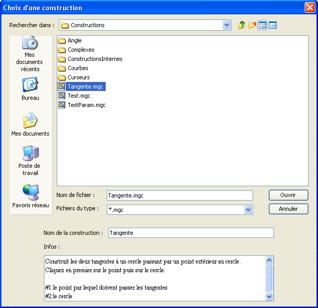

Exemple de céation d'une construction.
Nous désirons créer une construction créant les deux tangentes à un cercle menées d''un point extérieur à ce cercle.
Commencez par utiliser le menu Fichier - Nouvelle figure sans longueur unité.
A l'aide de l'icône  créez trois points libres que nous appelerons O, A et M (dans la pratique inutile de les nommer).
créez trois points libres que nous appelerons O, A et M (dans la pratique inutile de les nommer).
A l'aide de l'icône  , créez le cercle de centre O et passant par A.
, créez le cercle de centre O et passant par A.
Notre construction a besoin d'utiliser le centre du cercle mais ne doit pas utiliser le point O. En effet les objets finaux ne doivent être construits qu'avec le cercle et le point M. Ils ne doivent pas utiliser le point O qui a servi à créer le cercle.
Utilisez l'icône  pour masquer le point O.
pour masquer le point O.
Utilisez le menu Créer - Point - Centre d'un cercle puis cliquez sur le cercle.
Un nouveau point apparaît.
Utilisez l'icône  pour créer le milieu du segment joignant M au centre du cercle. Nous l'appelerons I.
pour créer le milieu du segment joignant M au centre du cercle. Nous l'appelerons I.
Créez maintenanr le cercle de centre I et passant par O.
Utilisez l'icône  pour créer l'intersection des deux cercles. Deux points apparaîssent que nous appelerons P et Q.
pour créer l'intersection des deux cercles. Deux points apparaîssent que nous appelerons P et Q.
Utilisez l'icône  pour créer les segments [OP] et [OQ].
pour créer les segments [OP] et [OQ].
Utilisez l'icône  pour créer les perpendiculaires à ces deux segments passant respectivement par P et Q. Ce sont nos deux tangentes.
pour créer les perpendiculaires à ces deux segments passant respectivement par P et Q. Ce sont nos deux tangentes.
Utilisez le menu Construction - Choix des objets sources - Graphiques.
Cliquez d'abord sur M puis sur le premier cercle.
Utilisez ensuite le menu Construction - Choix des objets finaux - Graphiques.
Cliquez sur les deux tangentes.
Il reste à finaliser la construction.
Utilisez le menu Construction - Finir la construction en cours.
Une boîte de dialogue s'ouvre. Remplissez-la comme ci-dessous :

Les deux premières lignes servent à donner des indications sur l'utilité de la construction.
Les deux dernières servent à donner des indications à l'utilisateur lorsqu'il sera en train de désigner les deux objets sources.
Validez. La contruction est créée. Si vous enregistrez votre figure la construction sera enregistrée avec la figure.
Nous allons maintenant enregistrer notre construction.
Utilisez pour cela le menu Construction - Enregistrer une construction de la figure dans un fichier.
Une boîte de dialogue s'ouvre vous présentant les constructions contenues dans la figure.
Cliquez sur Tangente puis sur Enregistrer.
Une boîte de dialogue classique d'enregistrement s'ouvre.
Choisissez le nom du fichier (le nom de la macro par défaut) et l'emplacement de votre choix puis validez.
Utilisons maintenant cette construction dans une nouvelle figure.
Créez une nouvelle figure.
Créez un cercle et un point extérieur à ce cercle.
Utilisez le menu Constructions - Implémenter une contruction depuis un fichier.
Une boîte de dialogue s'ouvre analogue à celle qui figure ci-dessous.

Si vous cliquez sur une construction (Tangente.mgc par exemple) vous pouvez voir en bas de la fenêtre de dialogue le nom de la construction et les renseignements sur celle-ci.
Cliquez sur ouvrir.
La ligne d'indication vous demande de cliquer sur le point par lequel doivent passer les tangentes. Cliquez sur le point désiré.
La ligne d'indication vous demande ensuite de cliquer sur le cercle.
Vos tangentes apparaissent.
Remarque importante : Lorsque vous implémentez une construction contenue dans un fichier ou lorsque vous enregistrez une construction dans un fichier, vous pouvez quel est le répertoire par défaut dans lequel cette opération se fera. Ce choix se fait dans le menu Options - Préférences et en cliquant sur l'onglet Répertoire constructions.
Created with the Personal Edition of HelpNDoc: Easy CHM and documentation editor